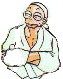
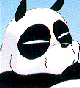
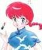

I Personaggi
|
I Personaggi |
I personaggi presenti in Ranma 1/2 sono tantissimi e, caratteristica della Takahashi presente non solo in Ranma, sono tutti perfettamente caratterizzati e con una propria psicologia ben delineata: anche quelli più marginali. Elencarli tutti è un'impresa nel vero senso della parola poiché ne sono apparsi continuamente di nuovi, alcuni appaiono solo una volta, e oltretutto ci sono alcune differenze tra il Manga, gli OAV, i Films ecc. Cercherò di sottolineare queste differenze, ma abbiate "pietà" perché, come ho detto, è quasi impossibile!!!
L'elenco è suddiviso, ove possibile, per famiglia di appartenenza o per provenienza. Oltretutto, all'interno delle famiglie, i personaggi sono elencati in ordine di "albero genealogico" (per questo non troverete Ranma o Akane per primi).
Notare che le immagini relative ai personaggi, non sono omogenee tra loro né in misura, né in stile: per quelli "trasformisti", ho messo la doppia versione, per alcuni ho messo una versione SD, per gli altri ho messo quello che mi piaceva, il tutto sempre cercando di mantenere al minimo possibile i tempi di caricamento.
Famiglia Saotome
Saotome è un nome molto comune ed è anche una vecchia parola usata per dire "ragazza". I nomi dei Saotome, tranne quello di Nodoka, hanno a che fare con i cavalli.
| Genma Saotome |  |  |
È l'insensibile padre di Ranma. Molto tempo fa, si mise daccordo col suo amico Soun Tendo, affinché i loro due figli si sposassero. Mentre stava allenandosi con Ranma nello sperduto Campo di Jusenkyo in Cina, è stato spinto dal figlio dentro la Sorgente Shonmaoniichuan, da dove è uscito trasformato in Panda. Al contrario di Ranma, Genma non ha molti problemi a convivere con la sua doppia natura e, anzi, a volte gli piace vivere da panda, soprattutto se ciò gli torna utile. Anche quando è un panda, continua a fare alcune cose come se fosse un uomo, come, ad esempio giocare a shogi con Soun. Dal momento che il panda non può parlare, si esprime tramite dei cartelli di legno che appaiono praticamente dal nulla!
Segni Particolari: Occhiali rotondi legati intorno alle orecchie
Armi: Quando è panda, usa i cartelli, altrimenti qualche tecnica di arti marziali
Significato del Nome: Genma significa "Cavallo Scuro"
| Nodoka Saotome |  |
L'influenza di una madre con le sue preoccupazioni, è dannosa per gli allenamenti di un ragazzo nelle arti marziali, così Genma prende suo figlio e lascia Nodoka. Quando parte, Genma giura di riuscire a fare di Ranma un uomo completo, altrimenti avrebbe fatto un onorevole "seppuku" (quello che noi chiamiamo hara-kiri). Come moglie di un maestro di arti marziali, Nodoka accetta la decisione di Genma.
Nodoka riceve regolarmente delle lettere da Genma, finché questi arriva a Jusenkyo con Ranma e le lettere smettono di arrivare. Un giorno Nodoka arriva al dojo dei Tendo con lo scopo di rivedere suo figlio cresciuto e diventato un uomo e, se così non fosse, ricordare a Genma la sua promessa! Così quando sente delle voci riguardanti suo figlio che si veste da donna e cose del genere, la sua tranquillità viene meno e impugna la sua katana. Quando finalmente arriva al dojo, Ranma e Genma sono "partiti per un altro viaggio di allenamento", lasciando la fidanzata Akane con sua "cugina Ranko" e il suo "Panda domestico" (credo sia inutile precisare chi siano la "cugina" e il "panda domestico"...).
Apparizione: Nettohen episodio 142. Voume 22 parte 2.
Armi: Una Katana utilizzata con maestria.
Significato del Nome: Nodoka significa "Mite".
| Ranma Saotome |  |
 |
È il nostro "eroe" ed il Kempo è la sua vita. Non rifiuta mai una sfida e, soprattutto se ha "marziale" nel suo nome, la vince pure! (ginnastica ritmica marziale, pattinaggio artistico marziale, cerimonia del tè marziale, arti culinarie marziali e così via).
Mentre si allenava a Jusenkyo con suo padre, è caduto nella Nyanniichuan subendone la maledizione. A causa di un accordo tra genitori, è stato deciso che Ranma dovrà sposare Akane Tendo e portare avanti con lei la tradizione del dojo, ma nessuno dei due vuole rispettare questo accordo...almeno apparentemente!
Significato del Nome: Ranma è un nome non molto comune che può essere usato sia per i maschi che per le femmine e significa "Cavallo Selvatico". Solitamente nei titoli Ranma è scritto in Kanji al maschile e in Hiragana al femminile.
Segni Particolari: il codino ai capelli. Ama vestirsi alla cinese.
Alias:
Camuffamenti: (solo per Ryoga)
Parlata: ha un modo di parlare rozzo e anche dialettale sia da ragazzo che da ragazza (es. "kawaikunee" invece di "kawaikunai", "omoshiree" invece di "omoishiroi").
Famiglia Tendo
Tendo significa "Via del Cielo" o "Destino". I nomi dei Tendo hanno a che fare con le nuvole.
| Soun Tendo |
È probabilmente il personaggio più emotivo di tutta la serie in quanto capita spesso di vederlo piangere copiosamente per i motivi più disparati. Soun e Genma sono vecchi amici sin dai tempi in cui si allenavano insieme come allievi di Happosai, prima di aprire le loro scuole di arti marziali personali; ancora oggi, sono ognuno il migliore amico dell'altro. Solitamente Soun diventa furioso ogni volta che sembra che Ranma abbia un'altra ragazza oppure quando sembra che Ranma preferisca qualcun'altra ad Akane.
Significato del Nome: Soun significa "Nuvola Veloce"
| La Signora Tendo |
La Signora Tendo, cioè la moglie di Soun, è morta quando Kasumi, Nabiki ed Akane erano molto piccole. Di lei non si sa praticamente nulla, neanche il nome.
| Kasumi Tendo |  |
È la più grande delle figlie di Soun ed ha 19 anni. È la classica ragazza giapponese ed ha preso in mano la conduzione della casa dopo la morte della madre. Solitamente rimane poco turbata da tutto quello che le accade intorno. Anche se sembra una ragazza priva di sentimenti ed espressioni, possiede in realtà un carattere molto dolce e comprensivo, pronto ad ascoltare e porta avanti la casa da sola con molta dedizione e pazienza. È segretamente (nel senso che l'unica a non essersene accorta è lei ^__^;;) innamorata del Dott. Tofu e vorrebbe che Akane diventasse una perfetta casalinga e si sposasse felicemente con Ranma.
Significato del Nome: deriva da "kasumi-gumo"
cioè una "Nuvola che è come la Nebbia"
| Nabiki Tendo |  |
È la figlia secondogenita ed ha 17 anni. Ha un carattere a volte meschino, si comporta come un'usuraio e cerca di trarre profitto da ogni situazione in cui si trova coinvolta. Non disdegna neanche le scommesse ed è pronta a "giocare sporco" pur di vincerle. Ha messo su perfino un "commercio" di fotografie di Ranma-chan ed Akane, per spillare quattrini al povero Tatewaki Kuno. A volte, però, ha dato anche dei buoni consigli e ha mostrato di essere l'unica in possesso di buon senso e facoltà mentali in certe situazioni.
Significato del Nome: deriva da "nabiki-gumo" cioè "Nuvola Fluttuante"
| Akane Tendo |
È la figlia più giovane [nonché la ragazza che preferisco in tutta la serie!!!! :-)) ] ed ha 16 anni. È una ragazza dal "caratterino" molto forte e "focoso" e odia i ragazzi, nonostante si trovi spesso al centro dell'attenzione di questi ultimi; anzi, praticamente è la ragazza più corteggiata della scuola nonostante sia scontrosa e scostante verso molti di loro. Ovviamente ha rifiutato da subito il suo fidanzamento forzato, specialmente con un "maniaco pervertito" (come dice lei) come Ranma, il quale a sua volta non ha accettato il fidanzamento con un "maschiaccio violento e completamente privo di sex-appeal".
Comunque sia, Akane si dimostra gelosa di tutte le ragazze che provano ad "accalappiare" Ranma, ma contemporaneamente nega ogni suo interesse verso Ranma stesso, così come fa Ranma nei confronti di Akane. Nonostante i loro continui litigi (spesso anche maneschi) e rifiuti, Akane e Ranma, nell'arco di tutta la serie, vedranno crescere invece il loro amore e l'attrazione reciproca, anche se continueranno a negarlo.
Un'altra caratteristica di Akane è la sua cucina "velenosa" che si abbatte spesso e volentieri come una sventura sugli abitanti del dojo, anche se lei non accetta mai la confitta e continuerà a provare e riprovare in cucina, e l'essere disposti ad assaggiare le sue "specialità" sarà spesso una sfida per chiunque. Dal momento che Ranma è il fidanzato di Akane, si ritroverà suo malgrado a vestire spesso i panni della vittima della cucina di Akane, la quale è completamente incapace in ognuno dei compiti tradizionalmente femminili come cucinare, cucire, guidare la cerimonia del tè ecc. Comunque ha una grande forza di volontà e va avanti con orgoglio nei suoi tentativi, e rimane molto contrariata quando qualcuno, soprattutto Ranma, la critica. A volte è un po' goffa anche nelle arti marziali, anche se, per essere una ragazza, combatte molto bene. È incapace anche nel nuoto e quando entra in acqua cola a picco come un sasso.
Nonostante tutto questo, è sicuramente una ragazza molto amabile e ha sfoggiato più volte insospettate doti di femminilità e dolcezza. Ranma stesso pensa che, nonostante tutto, Akane sia una ragazza davvero carina e non se la farebbe portare via da nessuno.
Significato del Nome: deriva da "akane-gumo" cioè "Nuvola Scarlatta"
Alias: li tira fuori sempre Ranma. Il più usato è "kawaikune", cioè "senza fascino"
Famiglia Kuno
I nomi dei Kuno, tranne quello del Sig. Kuno che non si conosce, hanno a che fare con le spade.
| Signor Kuno |
È il preside della scuola ed è fissato con le Hawaii! Tira fuori le regole più strane per cercare di infastidire gli studenti e in particolar modo Ranma, il quale vi si oppone sempre. Quando ritorna dall'America, annuncia che ha un grande regalo per gli studenti: una nuova regola per cui tutti i ragazzi devono avere le teste rasate alla marabozu e le ragazze devono avere un taglio di capelli molto corto, a meno che gli studenti non riescano a prendere una noce di cocco contenente un foglio di esenzione entro tre giorni. Il preside cerca in tutti i modi di riuscire a tagliare il codino a Ranma per farne un esempio per tutti gli altri, ma fallisce sempre.
Nel manga, gli studenti lo costringono a rivelare che, nonostante egli non ricordi più dove fosse finita la noce di cocco, egli ha tatuato le istruzioni per raggiungerla sulla testa rasata del figlio perduto Tatewaki, che egli ha lasciato 3 anni fa. Nella serie TV la scoperta di questa relazione avviene più tardi.
Apparizione: Nettohen episodio 46. Volume 12 parte 1.
Segni Particolari: una palma bonsai che gli cresce in testa e l'abbronzatura pesante. Indossa occhiali da sole e vestiti hawaiani. A volte va sullo skateboard.
Parlata: usa un giapponese-americanizzato (o americano-giapponesizzato!) e "allunga" la parola "desu" (es. "gibu appu de---su!" "Mi arrendo!")
Armi: maneggia un paio di barikan (forbici per capelli) o dei grossi "tosatori". Passa o lancia degli ananas esplosivi agli ignari studenti. A volte usa dei trucchi da idiota come degli aereoplani radiocomandati equipaggiati con delle lame per tagliare i capelli.
Nota: il nome del Sig. Kuno non si conosce, ma nella versione italiana del manga, l'hanno chiamato "Koccho".
| Tatewaki Kuno |
Ha 17 anni ed è il capitano del club di kendo della Furinkan. È abbastanza presuntuoso e sembra che discenda da una ricca famiglia di samurai. Un giorno, ad una riunione scolastica, disse che chiunque avesse voluto avere un appuntamento con Akane, avrebbe dovuto prima vincerla in combattimento. Da quel giorno, tutte le mattine, Akane deve sfidare "legioni" di ragazzi (Kuno compreso) che trova appostati dal cancello della scuola fino alla porta. Da quando è venuto a sapere del fidanzamento tra Akane e Ranma, Kuno ha cominciato a sfidare regolarmente Ranma nella speranza di spezzare il suo legame con Akane e, altrettanto regolarmente, perde il duello. Durante uno dei loro combattimenti, una strana ragazza con il codino, è apparsa misteriosamente al posto di Ranma ed ha steso Kuno il quale si è follemente innamorato della ragazza in questione. Da quel giorno il povero Kuno vive una disperata indecisione d'amore tra Akane e la misteriosa "ragazza col codino", mentre altri studenti si sono rassegnati al fidanzamento tra Akane e Ranma, da quando quest'ultimo ha battuto Kuno. Ovviamente Tatewaki odia con tutte le sue forze Ranma che vive troppo vicino ad Akane e alla ragazza col codino.
Apparizione: Episodio 2. Volume 1 parte 3.
Significato del Nome: Kuno è scritto come "capacità" e nell'episodio 2 Nabiki fa una battuta sul suo nome scrivendolo in Kanji come "incapacità". Tatewaki significa "colui che impugna una spada"
Segni Particolari: veste da samurai e impugna una bokuto
Parlata: ha un modo di parlare molto formale e ricco di citazioni poetiche
Armi: una bokuto cioè la spada di legno da kendo
Alias:
| Kodachi Kuno |
Ha 16 anni ed è la strana sorella minore di Kuno. È un'esperta di ginnastica ritmica marziale ed è la campionessa dell'accademia femminile St. Hebereke (San Bacco). Kodachi ha fatto suo il famoso proverbio che dice che "in amore e guerra tutto è lecito", e solitamente vince tutte le sue gare facendo fuori gli avversari prima che queste inizino: è capace di usare ogni sporco trucco pur di vincere, il tutto sensa il minimo rimorso. Uno dei suoi trucchi preferiti è dare alla vittima un bouquet di rose nere contenente della polvere esplosiva, soporifera o paralizzante.
Un giorno, mentre cercava di far fuori Akane prima del loro incontro, viene scaraventata via accidentalmente da Ranma (che inseguiva P-Chan) il quale poi inconsapevolmente la salva. Quando si rende conto di ciò che è accaduto e vede il ragazzo che l'ha salvata, Kodachi si innamora subito di Ranma: avendo frequentato sempre una scuola femminile, ormai aveva perso le speranze di avere normali relazioni con l'altro sesso, almeno questo è quanto dice lei stessa. Kodachi comunque, troverà sempre due persone pronte a sbarrarle la strada verso il cuore di Ranma: una è ovviamente Akane, l'altra è una "misteriosa ragazza col codino" che osa portare lo stesso nome del suo amato.
Apparizione: Episodio 11. Volume 2 parte 9
Significato del Nome: Kodachi significa "spada poco lunga"
Segni Particolari: le rose nere che ogni tanto appaiono dai suoi abiti o che tiene tra i denti. A volte fa roteare il suo nastro come una frusta e sparge dei petali di rosa neri tutt'intorno. Ha una risata sgraziata e odiosa.
Parlata: anche lei parla con una certa formalità
Armi: la sua preferita è il nastro, ma sembra che sia portata ad usare qualunque cosa come un'arma dato che questa è la regola della ginnastica ritmica marziale. Usa anche i già citati bouquet soporiferi e paralizzanti
Alias:
| Sasuke Sarugakure |  |
È il ninja personale di casa Kuno che difende con le trappole più strane. Anche se non è un Kuno, praticamente fa parte della loro famiglia, dato che i suoi avi difendono quelli dei Kuno da generazioni. Svolge anche mansioni da domestico, facchino e tuttofare, riparando anche la casa dai danni dovuti ai combattimenti con i rivali.
Apparizione: Nettohen episodio 2. (in un certo senso, Sasuke nella serie TV ha preso il posto che aveva Gosunkugi nel manga, anche se quest'ultimo non era legato alla famiglia Kuno)
Significato del Nome: ci sono dei riferimenti ad una leggenda su un ninja-scimmia Sarutobi Sasuke del Monte Kuno. Invece di Sarutobi ("volo della scimmia") il suo cognome è Sarugakure "nascondiglio della scimmia".
Dalla Cina con furore!
Anche se non tutti sono una famiglia nel senso "anagrafico" del termine, esiste in Ranma una "gang" di cinesi nutrita e molto assortita (nonché importante per la serie). Questo è normale dal momento che in Ranma tutto ha origine dalla Cina...
| Obaba |  |
È la bisnonna di Shampoo, ed è molto ma molto vecchia, nonché potente nella conoscenza delle arti marziali. Da quando è arrivata in Giappone, tra le altre cose, gestisce il ristorante cinese "Neko-Hanten" insieme alla sua dolce nipotina. Tanto per cambiare anche Obaba ritiene Ranma responsabile di diverse cose tra le quali la maledizione che ha colpito Shampoo, e cerca in tutti i modi di farli sposare, ricorrendo anche a dei ricatti veri e propri. Riconosce in Ranma un ragazzo forte e abile e non manca mai di metterlo alla prova nelle arti marziali. Nonstante sia una vecchiaccia "mummiosa", non le piacciono molto le battute sul suo aspetto, credendo a volte perfino di essere una bellezza. Comunque ha una grande conoscenza di tutte le tecniche di arti marziali che si tramandano nel suo clan e di magia.
Apparizione: Nettohen episodio 3. Volume 5 parte 6.
Significato del Nome: il suo vero nome, non viene rivelato fino a quando Happosai non la riconosce molto avanti nella serie (episodio Nettohen 37 o Volume 10 parte 1) e si scopre che si chiama "Cologne". Fino ad allora viene chiamata "Obaba", anche se in realtà andrebbe scritto "O-Baba" cioè "Possibile"-"Posto di Montagna Accidentato", che in Cinese non ha alcun significato!! Comunque Obaba viene anche utilizzato come appellativo per indicare la "nonna".
Nota: in Italia, nella versione trasmessa in tv, Cologne è stato cambiato in "Colomba".
| Shampoo |  |
 |
Probabilmente è quella che viene considerata come la migliore "bambola sexy" di tutta la serie. È una ragazza molto carina, disinibita, agile e a volte anche violenta e crudele. Subito dopo l'esperienza delle sorgenti maledette, la Guida Cinese porta Ranma e Genma al Villaggio Joketsuzoku dove Shampoo sta battendo tutte le sue avversarie nella gara annuale che si tiene al suo villaggio. Ranma e Genma, arrivando sfiniti ed affamati (e anche trasformati!) si siedono ad un banchetto preparato di tutto punto, cominciando ad ingoiare senza ritegno quello che costituiva il premio del torneo. Indispettita da questo, Shampoo invita Ranma (ragazza) a battersi con lei ma viene inesorabilmente battuta. Dal momento che è stata battuta da una donna straniera Shampoo, secondo la legge del suo villaggio, si avvicina a Ranma e le dà il cosiddetto "bacio della morte", il che significa che Shampoo inseguirà Ranma per ogni dove, finché non l'avrà uccisa.
Quando giunge a Tokyo sulle tracce di Ranma-chan, Shampoo giunge al dojo dei Tendo dove, per la prima volta, incontra Ranma-kun. A questo punto, Shampoo cerca di attaccare Akane credendo che nascondesse Ranma-chan, e così Ranma-kun, nel tentativo di difendere Akane, batte di nuovo Shampoo la quale, invece di dargli il "bacio della morte", questa volta dichiara il suo amore a Ranma-kun chiamandolo "marito!".
Questa nuova svolta è dovuta sempre alla legge del villaggio di origine di Shampoo. Infatti, se una donna del clan delle amazzoni viene battuta da uno straniero ci sono due possibilità: se lo straniero era una donna, questa va uccisa da colei che è stata battuta; se lo straniero era un uomo, devono sposarsi. È per questo che Shampoo, almeno all'inizio, si ritrova nella singolare situazione in cui odia a morte Ranma-chan, ma vuole sposare Ranma-kun!
Secondo la sua natura crudele, Shampoo cerca in tutti i modi di eliminare chi ostacola il suo amore per Ranma-kun, per esempio prova a far perdere ad Akane ogni ricordo di Ranma grazie ad una sua tecnica segreta di lavaggio del cervello (anzi della testa) con uno "shampoo" speciale a base di una medicina cinese in grado di manipolare i ricordi delle persone.
Un giorno, distrutta dalla scoperta del segreto di Ranma e dopo aver (momentaneamente) perso ogni speranza di accasarsi con lui, Shampoo torna con Obaba al campo di allenamento di Jusenkyo, e durante l'allenamento, viene spinta nella Maoniichuan, cioè la sorgente del gatto affogato. Shampoo si rende conto a questo punto che, nonostante tutto, Ranma è un vero uomo e dato che la tradizione del suo clan vuole che le amazzoni debbano sempre sposare un uomo forte, torna con Obaba in Giappone per cercare con tutti i mezzi leciti e non di sposarsi con Ranma. Shampoo fa anche la cameriera al ristorante Neko Hanten e consegna "ramen" a domicilio in bicicletta, investendo persone e volando sui tetti!
Apparizione: Episodio 15. Volume 4 parte 4. (Ritorna poi: Nettohen episodio 2. Volume 5 parte 1)
Significato del Nome: l'adattamento in Shampoo, è dovuto probabilmente al fatto che una delle sue tecniche consiste proprio in una specie di "shampoo" e al fatto che il nome in originale ha più o meno questo suono (in cinese: X'ian pu'). Il suo nome "Shan p`'u", sarebbe "corallo"-"giada grezza" e non ha alcun significato particolare in cinese. (Nota: In Italia ci sono purtroppo molte versioni del suo nome, la maggior parte delle quali sono errate!)
Segni Particolari: lunghi capelli viola. Veste abiti cinesi e porta degli ornamenti attorno ai capelli, che le rimangono anche quando è una gatta.
Parlata: parla secondo lo stereotipo dei cinesi che parlano giapponese (formando molti aggettivi con "-teki", usando "aru" come postfisso). Utilizza frasi di conversazione cinesi-katakana:
Armi: utilizza i "ciat-shin-chon" (mazze con delle grandi sfere sulla punta) e a volte una grande spada ricurva
| Linlin e Lanlan |  |
Sono le "sorelle minori" (non sorelle di sangue) di Shampoo abitanti nel villaggio del suo clan, che si sono allenate molto duramente in tecniche di arti marziali ridicole quando hanno visto Ranma battere Shampoo. Sono arrivate in Giappone solo per chiedere a Shampoo come ha ucciso Ranma e, quando scoprono che non l'ha fatto, ci provano loro. Shampoo le ferma e dà loro il famoso "bacio della morte", rattristandole perché ha tradito la sua gente. Alla fine, però, sembra che anche loro si innamorino del povero Ranma, ancora una volta involontario rubacuori.
Apparizione: Nettohen episodio 40. (Ritornano poi: Nettohen episodio 72).
Significato del Nome: dai nomi di due famose sorelle cinesi esistenti realmente, che cantavano una canzone dal titolo "LINLIN LANLAN ryuen!", che era il jingle pubblicitario di un ristorante.
Parlata: come per Shampoo.
| Mousse |
È il miope ragazzo cinese follemente innamorato di Shampoo. I due sono amici fin dall'infanzia ed è da allora che lui ama Shampoo la quale, però, l'ha sempre rifiutato anche perché, quando erano ancora bambini, l'ha battuto. Anche se erano bambini e la loro sfida era più che altro un gioco, secondo la legge del suo villaggio Shampoo non può sposare Mousse (e neanche lo vuole!) ma Mousse non si è rassegnato a questo e cerca in tutti i modi di sconfiggere Ranma-kun che è riuscito invece a rubargli la "fidanzata". È caduto anche lui in una delle sorgenti e la sua maledizione riguarda il trasformarsi in una papera bianca e con gli occhiali. Ha cominciato anche a lavorare (anzi più che altro a fare lo schiavo) al "Neko Hanten".
Apparizione: Nettohen episodio 5. Volume 5 parte 7.
Significato del Nome: Mousse, non è evidentemente un nome cinese, ma significa proprio mousse...
Segni Particolari: un lungo abito cinese bianco e capelli neri lunghi. Porta degli occhiali molto spessi altrimenti non distingue neanche le persone. Gli occhiali gli restano anche quando si trasforma.
Armi: qualunque tipo di oggetto che riesce a tirare fuori dalla sua casacca.
| La Guida di Jusenkyo |
È la guida cinese che accompagna Genma e Ranma nel loro viaggio, spiegandogli poi le maledizioni relative alle varie sorgenti di Jusenkyo e l'incredibile varietà di gente che vi è caduta dentro. Ovviamente quando avverte i due sulla pericolosità delle sorgenti, loro non gli danno minimamente ascolto e continuano ad allenarsi sulle pozze... con le conseguenze che tutti sappiamo! La Guida accompagna poi Genma e Ranma (trasformati) al villaggio di Joketsuzoku, dove gli fa da traduttore con le "amazzoni" e gli fa capire i guai in cui si sono cacciati! Il suo nome non si conosce.
Apparizione: Episodio 1 (riappare poi ogni tanto nel corso della serie)
Parlata: valgono le stesse considerazioni fatte per Shampoo.
La "Coppia d'Oro"
Non sono una famiglia, ma gareggiano e combattono sempre insieme in quello che viene chiamato "Pattinaggio Artistico Marziale".
| Azusa Shiratori |  |
È la graziosa parte femminile della "Coppia d'Oro" del Koru Hosei Gakuen. Azusa è affetta da una strana forma di cleptomania: quando vede qualcosa che le piace, le dà un nome Francese (!) e cerca di prenderselo in tutti i modi; se una persona tiene l'oggetto in questione, comincia a colpirla sulla testa con qualcosa finché non riesce a strapparglielo. Quando trova P-Chan, se lo prende e lo chiama "Charlotte": da qui nascerà la sfida Azusa-Mikado vs Akane-Ranma che avrà come premio proprio il porcellino nero. Mitica quando si appropria di Genma-Panda, lo chiama Oscar e lo traveste da Lady Oscar!!!
Apparizione: Nettohen episodio 7. Volume 2 parte 6.
Significato del Nome: Shiratori significa "Uccello Bianco". Azusa significa "Albero di Catalpa"
| Mikado Sanzenin |
È l'affascinante e presuntuoso playboy della situazione, che fa coppia nel pattinaggio con Azusa. La sua tattica preferita durante i combattimenti, è quella di cercare in ogni modo di baciare la ragazza della coppia avversaria, e infatti non pensa praticamente ad altro. È odiato profondamente da Ranma, perché un giorno è riuscito a baciare Ranma-chan sulla bocca, mandando in frantumi il suo orgoglio: infatti Ranma (nonostante non sappia neanche reggersi in piedi sui pattini) decide di fare coppia con Akane nella sfida, non per il premio (P-Chan) ma per vendicarsi dell'umiliazione.
Apparizione: Nettohen episodio 7. Volume 2 parte 6.
Significato del Nome: Sanzenin significa "3000 Palazzi" e Mikado significa "Imperatore"
Secondari, ma non troppo!
In questo paragrafo vengono presi in esame quei personaggi che sono in apparenza secondari, ma si sono ritagliati un loro spazio non indifferente all'interno di tutta la narrazione diventando, in certi casi, addirittura i protagonisti assoluti di certe situazioni (come Ryoga, per esempio).
| Dott. Ono Tofu |  |
Il chiroterapeuta della storia è un grande esperto di medicina delle arti marziali, almeno quando non è fuori di sé! Infatti, ogni volta che vede Kasumi o la sente soltanto nominare, esce completamente fuori di testa. I sintomi della sua follia sono: appannamento degli occhiali, sbagliare cose elementari come le porte delle stanze o il verso della cornetta del telefono, e il cominciare a comportarsi come un perfetto idiota (ad esempio ballare in giardino abbracciato al suo scheletro "Betty-chan") e così via; quando il Dottore è in questo stato, diventa un autentico pericolo per sé stesso e per i suoi pazienti. Ovviamente tutti quanti sanno del suo amore per Kasumi, tranne la diretta interessata e lui!
All'inizio della serie, vediamo che anche Akane è segretamente innamorata
di Tofu, soffrendo del fatto che questi invece ama Kasumi. Il motivo per cui
all'inizio della serie Akane porta i capelli lunghi, è proprio per "spirito
d'emulazione" verso sua sorella, per cercare di essere più femminile
e piacere al Dottore: nel corso della serie, comunque, questo amore sembra sparire
progressivamente per essere rimpiazzato da quello verso Ranma. A volte Tofu
fa anche da consigliere per Akane e Ranma.
Genma è riuscito a farsi assumere part-time nello studio del Dottore
come aiutante tuttofare (notare che lui solitamente lavora lì sotto forma
di panda... e nessuno sembra considerare strana questa cosa!!).
Apparizione: Episodio 2. Volume 1 parte 3.
Significato del Nome: Tofu significa "Vento dell'Est"
| Ryoga Hibiki |  |
L'eterno disperso, col braccio d'acciaio ed il cuore di vetro (nonché il personaggio più rompiscatole di tutta la serie). Ryoga e Ranma sono rivali sin da quando andavano a scuola insieme da bambini. A quel tempo Ryoga sfidò Ranma ad un combattimento da tenersi in un prato dietro la sua casa ma, mentre vi si dirigeva (doveva solo girare l'angolo di casa sua) si perse e girò in lungo e in largo il Giappone per quattro giorni! Ranma lo aspettò ma, dopo quattro giorni di inutile attesa, tornò a casa e partì col padre per un viaggio di allenamento. Per riscattare l'offesa subita, Ryoga lo seguì fino in Cina dove, una ragazza col codino ed un panda che si inseguivano, lo buttarono nella sorgente Heituenniichuan, cioè quella del "Porcellino Nero Affogato". Il panda dopo averlo buttato in acqua, salvò il "nuovo" porcellino dall'affogamento... ma soltanto per farselo cucinare dalla guida cinese! La guida buttò il porcellino in un pentolone d'acqua bollente dal quale uscì quindi Ryoga che riuscì così a salvarsi dalla bollitura (purtroppo ^__^;).
Ryoga odia con tutte le sue forze Ranma, responsabile della sua maledizione; consapevole della sua colpa, Ranma decide di non rivelare a nessuno il segreto di Ryoga. Akane decide di prendere con sé il porcellino (non conoscendo la sua vera identità) e di chiamarlo "P-Chan". Ryoga si innamora profondamente di Akane (il maledetto >:-] ) anche se è convinto che nessuna ragazza si innamorerà mai di lui a causa della maledizione. Nonostante gli svariati "messaggi" e "segnali" che riceve (soprattutto da parte di Ranma), Akane non si è mai accorta del fatto che P-Chan fosse in realtà Ryoga, e anzi lo difende ogni volta che Ranma cerca di dargli fastidio, perché pensa sia impossibile che un ragazzo sia geloso di un maialino. Possiamo comunque dire che, dopotutto, Ryoga è il migliore amico di Ranma.
Oltre a non sapersi orientare minimamente, Ryoga viene anche ingannato dai più ridicoli travestimenti di Ranma. È comunque estremamente forte ed abile nelle arti marziali e, a volte, distrugge rocce e muri inavvertitamente quando è agitato.
Apparizione: Episodio 7. Volume 2 parte 2.
Significato del Nome: Hibiki significa "Rumore" mentre Ryoga significa "Zanne Buone".
Segni Particolari: possiede dei canini molto accentuati, tipo zanne vere e proprie. Veste con una casacca gialla e dei pantaloni neri, ed ha una fascia sulla testa che gli va a finire sul collo quando è un porcellino.
Armi: scaglia le fasce che ha in testa, un ombrello molto pesante ed usa la sua cintura come una lama.
Alias: quando è un porcellino viene chiamato "P-Chan" da Akane e "Charlotte" da Azusa.
| Happosai |
È il vecchio pervertito della situazione! è un uomo anziano ma anche molto molto potente, grandissimo esperto di arti marziali ed è stato il sensei di Genma e Soun i quali lo temono e lo detestano allo stesso tempo. Anni fa egli li allenò duramente, facendoli anche partecipare ai suoi saccheggi di biancheria intima femminile e punendoli quando rimanevano indietro. Alla fine, essi riescono a farlo ubriacare, incatenarlo e chiuderlo dentro un barile, gettare il barile in una caverna sigillandola con la dinamite e con una pietra con delle incisioni Buddhiste sopra. Un giorno Happosai, che tutti ormai credevano morto, riesce a liberarsi e si presenta al dojo Tendo con la pretesa di allenare il suo successore: molto vigliaccamente Genma gli presenta Ranma come suo succesore.
Happosai è un pervertito feticista al 100% (anche di più) e se ne va in giro rubando biancheria intima femminile per la sua grande collezione e palpando ragazze. Le sue perversioni sono anche l'origine della sua forza: se rimane troppo tempo senza toccare un corpo femminile o della biancheria intima la perde. Akane e Ranma-chan sono le ragazze che preferisce.
Apparizione: Nettohen episodio 15. Volume 5 parte 5. (riappare poi nel Nettohen episodio 114. Volume 19 parte 9)
Significato del Nome: "8 tesori insieme"
Armi: una piccola pipa con la quale fa volare via i suoi avversari. La più famosa invece è la devastante e a lungo dimenticata tecnica segreta Happo-dai-karin, che si rivela essere il lanciare delle bombe!
Alias: Obaba lo chiama 'Happy', come si faceva chiamare lui quando aveva 18 anni.
| Ukyo Kuonji |  |
Circa 10 anni fa, mentre era in giro per il paese ad allenarsi con il padre, Ranma rubava quotidianamete le "okonomiyaki" (una via di mezzo tra una focaccia e un'omelette) dallo "yatai" (chiosco di cibo) del padre di Ukyo, vincendo facilmente le difese di "Ucchan". Comunque era una rivalità amichevole e per gioco e Ukyo faceva dei disegni con le salse sopra le okonomiyaki per Ranma. Un giorno il padre di Ukyo disse a Genma che sua figlia voleva sposare Ranma, ma Genma gli risponde che Ranma ha già una fidanzata. Quando sente questo, il padre di Ukyo, rattristato, si lascia sfuggire il fatto che avrebbe dato a sua figlia lo yatai in dote, così Genma cambia idea e gli promette che avrebbero preso Ukyo con loro. Genma chiede quindi a Ranma di decidere e dirgli chi preferisce tra Ukyo e le okonomiyaki. Ovviamente Ranma, un po' perché era ancora bambino e un po' perché non sospettava minimamente che Ukyo fosse una ragazza, decide per le okonomiyaki, e così Genma e Ranma si prendono lo yatai e scappano via lasciandosi dietro Ukyo. Derisa dalle sue compagne perché abbandonata dal "fidanzato", Ukyo decide che non si sarebbe mai più innamorata di un ragazzo in vita sua e comincia a vestirsi e a vivere da uomo, dedicandosi alle "arti marziali culinarie".
Qualche anno più tardi si presenta come nuovo studente alla scuola Furinkan e sfida Ranma. Dopo un'avvincente duello, Ranma scopre il vero sesso di Ukyo (oltretutto pensando che sia caduta anche lei nella sorgente, cerca di farla tornare uomo con l'acqua calda!). Ukyo invece scopre che Ranma non va molto daccordo con la sua attuale fidanzata "senza fascino". I due fanno pace e Ukyo si innamora di nuovo di Ranma. Nonostante Ukyo adesso sogni di sposare Ranma e cerchi di separarlo da Akane, Ranma la considera invece soltanto come un vecchio amico. I suoi tentativi di prendersi Ranma, sono comunque meno violenti di quelli delle altre pretendenti di Ranma: ad esempio, invece di provare ad uccidere Akane, Ukyo cerca di farla mettere insieme a Ryoga.
Nel frattempo Ukyo ha aperto un negozio di okonomiyaki chiamato "Ucchan" che le permette di essere un'esperta sia di lavori domestici sia in affari, e anche se ora vive per cucinare okonomiyaki, sarebbe disposta a dare tutto via pur di sposare Ranma
Apparizione: Nettohen episodio 23. Volume 9 parte 5.
Significato del Nome: Kuonji significa "tempio eterno" e Ukyo significa "destra di Kyoto"
Segni Particolari: porta sempre con sé una bandolera (come quella dei Carabinieri) carica di piccole palette per frittelle. Porta anche una grossa paletta sulla schiena.
Parlata: parla il dialetto "Kansai" (es. "ya" al posto di "da", "-mahen" al posto di "-masen", "uchi" al posto di "watashi" e usa "ooki ni" per dire "grazie").
Armi: La grossa paletta per frittelle che porta sulla schiena. Inoltre lancia le palette piccole che porta nella bandolera. A volte lancia dei sacchetti di farina esplosivi.
Alias:
| Tsubasa Kurenai |  |
Era una compagna molto carina di Ukyo alle scuole inferiori alla quale mandava regali e lettere d'amore. Ukyo (che si spacciava ancora per un ragazzo) rispose ad una delle lettere mandandole una foto della sua "fidanzata" Ranma-chan, e così Tsubasa ha sfidato Ranma per vincere Ukyo. Ranma ha provato a rivelare a Tsubasa il vero sesso di Ukyo ma Tsubasa non ne è rimasta molto sorpresa: le piacciono le ragazze e in particolare ogni ragazza che si comporta in modo gentile con lei. Tsubasa è molto abile nei travestimenti e usa camuffarsi in maniera molto bizzarra, per esempio da cassetta delle lettere, da distributore automatico e così via!
A proposito...Tsubasa in realtà è un ragazzo a cui piace vestirsi da ragazza! ^___-
Apparizione: Nettohen episodio 27. Volume 10 parte 9.
Significato del Nome: Kurenai significa "scarlatto" e Tsubasa significa "ali"
| Grafica, impaginazione e testi sono (c) di Francesco "Nibunnoichi" Giordano e non possono essere usati senza il consenso dell'autore. |